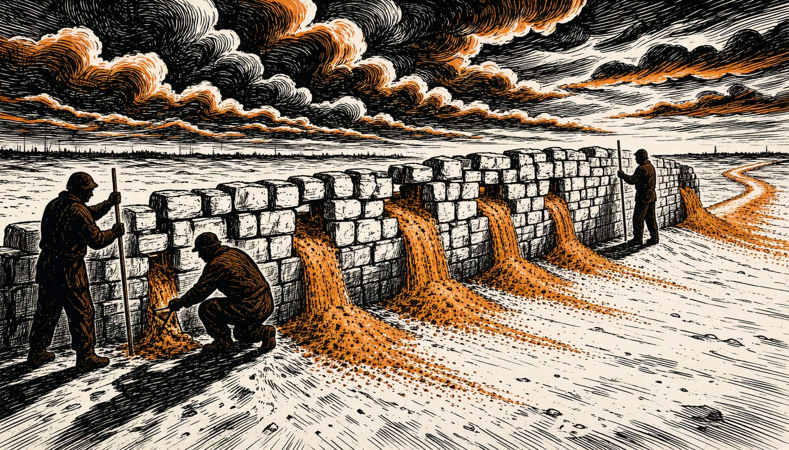

EU auditors say uneven enforcement blunts Russia sanctions
Direct trade with Russia fell from 253 billion euros to 58 billion between 2021 and 2025. The European Court of Auditors calls for clearer rules and stronger monitoring, saying the Commission lacks criteria to judge whether the sanctions work.

EU sanctions have sharply cut trade with Russia, the European Court of Auditors said in a report on 10 November 2026. The court wrote that unclear rules and weaknesses in enforcement dampen the impact of sanctions and make them easier to bypass.
EU-Russia direct trade fell from 253 billion euros in 2021 to 58 billion in 2025. In June, moneycontrol reported that in January 2026 the Council of the European Union adopted a regulation to prohibit Russian LNG and pipeline gas imports, with transition periods for existing contracts. The site wrote that the full ban takes effect for LNG from the beginning of 2027 and for pipeline gas from autumn 2027.
The auditors judged the sanctions to be the most far-reaching restrictive measures the EU has ever agreed to. They found the measures largely stopped the direct export of goods the Russian armed forces most need. Coordination has improved, but implementation across member states remains uneven, which limits the overall impact. Mihails Kozlovs, the report's lead author, said: "EU trade sanctions will deliver their intended impact if all member states apply them in a uniform and coordinated way".
The European Court of Auditors wrote that the country compensates for the lost European trade through India and China. Russia also still supplied around 12 percent of EU gas imports in 2025, the Union said in June. The auditors added that the European Commission lacks criteria for judging whether the sanctions work at all. That makes it hard to say whether they reach their goals or whether more are needed.
The auditors called for clearer rules, a review of enforcement, better information sharing and stronger monitoring. Russia rejects the measures. Its Permanent Mission to the EU has stated that Russia considers the restrictions illegitimate and unfounded. It also said the Russian Federation does not recognise unilateral coercive measures that circumvent the UN Charter.